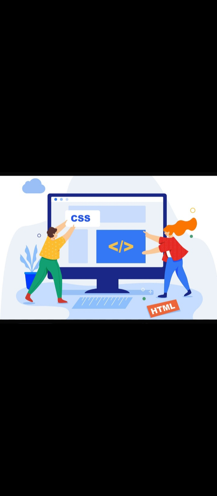

اعداد الطالبه :ساره السعيد السيد محمد السعيد
الرقم الجامعي:2504562
تعتبر لغه cascading style sheets او css من الركائز الاساسيه في تطوير وتصميم مواقع الويب الحديثه فهي لا غني عنها بجانب لغتي html وjavasscript فيبنما تقوم لغه html ببناء هيكل ومختوي الصفحه تاتي لغه css لتضيف الللمسه الحامليه والتنظميه جيث تتحكم في كل ما يراه المستخدم من اللوان وخكوط واحجام ومسافات تمكن اهميه css في قدرتها علي فصل المحتوي عن التصميم مما يحعل عمليه تطوير المواقع اكثر سهوله ومرونه واحترافيه فبدون css كانت صفحات الانترنت ستظهر بشكل بدائي عباره عن نصوص وصوره متراصه بدون اي تنسيق
cssهي اختصار ل cascading style sheetsومعناها اوراق الانماط المتتاليه وهي لغه برمجه تستخدم لتنسيق صفحات html وتتحكم ف الاوان والخطوط واحجام النصوص والخلفيات وطريقه توزيع العناصر داخل الصفحه بدونها تكون صفحات الويب عباره عن نصوص عاديه بدون جاذبيه
تعمل css من خلال قاعده تتكون من تلاته اجزاء
مثال عملي : h1(color:blue)
p(font-size
في هذا المثال قمنا بجعل كل العناوين لونها ازرق وجلعنا الفقرات حجم خطها 16

| ميزه لغه css | عيب لغه css | نوع من لغه css |
|---|---|---|
| فصل المحتوي عن التصميم مما يجعل الموقع منظم وسهل الصيانه | كثره الخصائص قد تسبب صعوبه للمبتدئين | External css(خارجي) :يتم كتابه كل الاكواد في ملف منفصل اكتداده css وربطه بلصفحه وهي افضل واكثر طريقه احترافيه لانها تسمح بلتحكم في نوقع كامل بملف واحد |
في النهايه تظل css هي اللغه الاساسيه التي لا يمكن الاستغناء عنها في عالم التصميم الويب وبدونها لا يمكن انشاء موقع جذاب واحترافي